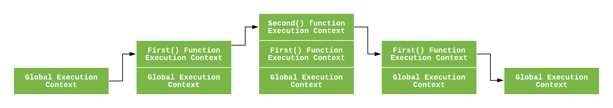

Execution Context
closure를 알아보다가, Lexical scoping 알아보다가 여기까지 왔네요.
Sukhjinder Arora의 Medium 글 - Understanding Execution Context and Execution Stack in Javascript 에 대한 번역본입니다.
execution context 의 3가지 종류
- global execution context
- functional execution context
- eval function execution context
execution context 실행과정
- creation phase
- LexicalEnvironment 컴포넌트 생성
- Environment Records
- Reference to the outer environment
- This binding
- VariableEnvironment 컴포넌트 생성
- Environment Records
- Reference to the outer environment
- This binding
- LexicalEnvironment 컴포넌트 생성
- execution phase
- 각 변수, 함수에 실제 값이 매핑됨
Execution Context
Execution context 는 간단히 말해, 자바스크립트 코드가 실행되는 환경에 대한 추상적인 개념입니다. 어떤 코드가 자바스크립트에서 실행되던 execution context 안에서 실행됩니다.
Execution Content 의 종류
- Global Execution Context
가장 기본적인 execution context 입니다. 함수 내부에 있지않고 global 하게 선언된 코드 입니다. 두가지 일을 수행하는데 브라우저같은 경우 window object 라는 global object 를 생성하고 global object 와 같은 this를 생성합니다. 여기서 global execution context는 프로그램 내에서 한개만 존재할 수 있습니다.
- Functional Execution Context
함수가 호출될 때 마다 해당 함수에 대해 새로운 execution context 가 생성됩니다. 각 함수는 각각의 execution context가 있지만 함수가 실행되거나 호출될 때마다 생성됩니다. 여기서는 몇개의 execution context 든 존재할 수 있습니다. 새로운 execution context 가 생성될 때마다 어떠한 특정 프로세스가 진행되는데 이는 앞으로 알아보도록 하겠습니다.
- Eval Function Execution Context
eval 함수에서 실행되는 코드역시 자신만의 execution context를 가집니다. 하지만 eval 은 일반적으로 많이 사용되지는 않습니다.
Execution Stack
execution stack 은 다른 프로그래밍 언어에서 calling stack 이라고도 알려져 있습니다. LIFO 구조를 가지는 stack 이며 코드가 실행되는 동안 생성되는 execution context를 저장하는데 사용됩니다.
자바스크립트 엔진은 처음으로 스크립트를 발견하면 global execution context를 생성하고 현재 execution stack에 push 합니다. 자바스크립트 엔진이 함수 호출을 만날 때 마다 해당 함수에 대한 execution context 를 생성하고 스택에 최상단에 push 합니다.
엔진은 stack 의 최상단에 있는 execution context를 실행합니다. 이 함수가 완료되는 execution stack 은 stack 에서 pop 되고 아래에 있는 context 로 실행이 넘어갑니다.
이를 아래의 코드로 이해해봅시다.
1 | let a = "Hello World!"; |

위의 코드가 브라우저에서 load 될 때 자바스크립트 엔진은 global execution context 를 생성하고 현재 execution stack 에 push 합니다. first() 가 실행될 때 자바스크립트 엔진은 해당 함수에 대한 새로운 execution context를 생성하고 현재 execution stack 의 상단에 push 합니다.
first() 안에서 second()가 실행될 때 자바스크립트 엔진은 또다시 execution context를 생성하고 현재 execution stack 에 push 합니다. second() 함수가 완료되면 execution context는 stack에서 pop 되고 실행은 아래(first())로 넘어갑니다.
first() 가 완료되면 execution stack 은 스택에서 사라지고 실행은 global execution context로 넘어갑니다. 모든 코드가 실행되면 자바스크립트 엔진은 현재 stack 에서 global execution context를 제거합니다.
어떻게 Execution Context가 생성되나요?
지금까지 자바스크립트 엔진이 execution context를 어떻게 관리하는지 알아보았습니다. 이제 자바스크립트 엔진이 어떻게 execution context를 생성하는지 알아봅시다.
execution context는 두가지 페이즈로 구성되는데 1) Creation Phase 와 2) Execution Phase 입니다.
The Creation Phase
execution context는 creation phase 에서 생성됩니다. 다음은 creation phase에서 일어나는 일들입니다.
- LexicalEnvironment 컴포넌트가 생성됩니다.
- VariableEnvironment 컴포넌트가 생성됩니다.
그래서 execution context 는 다음과 같이 나타낼 수 있습니다.
1 | ExecutionContext = { |
Lexical Environment
ES6 에서는 Lexical Environment 를 다음과 같이 정의합니다.
Lexical Environment는 ECMAScript 코드의 어휘 중첩 구조를 기반으로 특정 변수 및 함수에 식별자를 연결하는데 사용되는 specification 유형입니다. Lexical Environment 는 환경 레코드와 외부 어휘 환경에 대한 null 참조로 구성됩니다.
간단하게, lexical environment는 identifier-variable를 매핑하는 구조입니다. (여기서 identifier는 변수 / 함수의 이름을 가리키고, variable은 실제 객체 혹은 원시 타입에 대한 참조입니다.)
예를들어, 다음 코드를 보면,
1 | var a = 20; |
그래서 위의 코드에 대한 lexical environment는 다음과 같습니다.
1 | lexicalEnvironment = { |
각 lexical environment 는 3 가지 컴포넌트를 가집니다.
- Environment Record
- Reference to the outer environment
- This binding
Environment Record
exvironment record 는 lexical environment 내에서 변수와 함수 선언이 저장되는 공간입니다.
environment record에는 2가지 타입이 있습니다.
- Declarative environment record
이름에서 알 수 있듯이, 변수 및 함수 선언을 저장합니다. 함수 코드의 lexical environment 에는 declarative environment record 가 포함되어 있습니다.
- Object environment record
global code 에 대한 lexical environment 는 ovjective environment record를 포함합니다. 변수 및 함수 선언 외에도 개체 환경 레코드에는 전역 바인딩 개체 (브라우저의 window object) 도 저장됩니다. 따라서 각 바인딩 개체 속성 (브라우저의 경우 브라우저에서 창 개체에 제공한 속성 및 메소드 포함) 에 대해 레코드에 새 항목이 만들어집니다.
Note - 함수 코드의 경우 환경 레코드에는 함수에 전달된 인덱스와 arguments와 함수에 전달된 arguments의 길이 간의 매핑이 포함 된 arguments 객체도 포함됩니다. 예를 들어 아래 함수의 인수 객체는 다음과 같습니다.
1 | function foo(a, b) { |
Reference to the Outer Environment
Reference to the outer environment 는 외부의 lexical environment에 접근하는 것을 의미합니다. 이는 자바스크립트 엔진이 현재 lexical environment 에서 변수를 찾을 수 없을 때 외부 environment의 내부 변수를 바라볼 수 있다는 뜻입니다.
This Binding
여기서 this 의 값이 결정됩니다.
global execution context 에서 this 의 값은 global object를 가리킵니다. (브라우저의 경우 this는 window object를 가리킴)
함수 execution context 에서 this는 함수 호출 방법에 따라 다릅니다. 만약 object reference 에 의해 호출되었다면 this의 값은 해당 object 가 되고 그렇지 않으면 global object 혹은 undifined 가 됩니다.
1 | const person = { |
추상적으로 lexical environment 는 수도코드로 다음과 같이 생겼다.
1 | GlobalExectionContext = { |
Variable Environment
이 또한 execution context 내에서 variable statements에 의해 작성된 바인딩을 보유하는 Lexical Environment 입니다.
위에 쓰여 있듯이 variable environment 역시 lexical environment 이고 위에 정의된것 처럼 lexical environment 의 모든 속성과 컴포넌트를 가지고 있습니다.
ES6 에서 LexicalEnvironment 컴포넌트과 VariableEnvironment 컴포넌트 사이의 다른점은 전자는 함수 선언과 변수 (let 과 const) 바인딩에 사용되고 후자는 변수 (var) 바인딩만 저장하는데 사용된다는 것입니다.
Execution Phase
이 단계에서 모든 변수에 대한 할당이 완료되고 코드가 최종적으로 실행됩니다.
Example
1 | let a = 20; |
위의 코드가 실행될 때 자바스크립트 엔진은 global code 실행을 위한 global execution context를 생성한다. 그래서 global execution context는 creation phase에서 다음과 같이 나타납니다.
1 | GlobalExectionContext = { |
execution phase 에서 변수에 대한 할당이 끝이나고 global execution context 는 다음과 같습니다.
1 | GlobalExectionContext = { |
함수 multiply(20, 30) 이 호출되면 새로운 function execution context가 생성되고 함수 코드가 실행된다. 그래서 creation phase에서 function execution context는 다음과 같다.
1 | FunctionExectionContext = { |
그 후, execution context는 execution phase 를 거치며 이는 함수 내부의 변수에 대한 지정이 완료 되었음을 의미합니다. 따라서 function execution context는 다음과 같이 나타납니다.
1 | FunctionExectionContext = { |
함수가 완료된 후 반환 된 값을 c 에 저장됩니다. 그래서 global lexical environment 는 업데이트 됩니다. 그 후, global code가 완료되고 프로그램은 종료됩니다.
Note - let 과 const 변수에는 creation phase 에서 연관된 값이 없지만 var 는 undefined 로 설정되어 있습니다.
그 이유는 creation phase에서 함수 선언이 환경에 완전히 저장되는 동안 코드는 함수와 변수 선언을 위해 스캔 되기 때문에 변수들은 var의 경우 undefined로 초기화되고 let과 const 의 경우 uninitialized 로 남아 있게 됩니다.
이것이 어떻게 여러분들이 let 과 const 변수가 선언되기 전에 엑세스하면 reference error 생기지만 var 변수가 선언되지 전에는 접근할 수 있는지에 대한 이유입니다.
이는 우리가 hoisting 이라고 부르는 것입니다.
Note - execution phase 에서 만약 자바스크립트 엔진이 소스코드에 선언된 실제 위치에서 let 변수에 대한 값을 찾지 못하면 undefined 을 지정합니다.
Conclusion
우리는 자바스크립트 프로그램이 내부적으로 어떻게 실행되는지에 대해 알아보았습니다. 훌륭한 자바스크립트 개발자가 되기 위해 이 모든 개념을 전부 배울 필요는 없지만 위의 개념들을 잘 이해하면 hoisting, scope 그리고 closure 와 같은 다른 개념을 더 쉽고 깊이 이해하는데 도움이 됩니다.